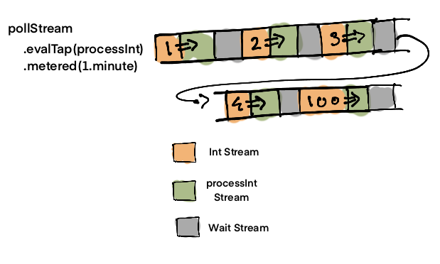

Visual guide to polling in Functional Programming (Scala)
In this post, let's look at how to poll a system using a Stream.
To make it easier/interesting, I will explain it using a visual approach.
Let's use the following problem statement.
- We have API for a queue1 that can be queried using
pollFnfunction. - We need to process data returned by queue using
processfunction. - There may or may not be data at the time of querying.
- We need to continually query the API to see if any new data is available.
- It is possible to run into rate limiting issues.
- The data processing isn't time critical, so we can query after wide intervals of time (1 minute).
This post assumes you understand fs2 streams.
I intend to write about fs2 streams later on but for now have a look at fs2 Streams Guide
Visualising the problem
Let's start by visualising what we want to build.
We know that pollFn function will call process function.
Next we want to repeatedly call this function to check for fresh data.
To avoid being rate limited we can query the API every 1 minute.
Now that we have visualised the problem, let's try to implement it. We will first implement it using imperative programming and then using streams, which will be the more functional way of doing it.
Implementation: Imperative Scala
// Basic functions
def pollFn(): Option[Int] = ???
def process(dataOpt: Option[Int]): Unit = ???
// Single call
def singlePoll() = {
val dataOpt = pollFn()
process(dataOpt)
}
// Repeated calls spaced for every 1 minute
def continuousPoll() = {
while (true) {
val dataOpt = pollFn()
process(dataOpt)
Thread.sleep(1000 * 60) // 60 * 1000 milliseconds or 1 minute
}
}
The code in continuousPoll is pretty straightforward.
Three lines to poll, process & wait. A fourth to run it in a loop.
It also looks quite similar to the third diagram shown at beginning.
Implementation: FS2 Streams
Now let's implement it using fs2.
import fs2.Stream
import cats.effect.IO
import cats.syntax.functor._
import cats.syntax.flatMap._
import scala.concurrent.duration._
import cats.effect.Timer
import scala.concurrent.ExecutionContext
implicit val timer = IO.timer(ExecutionContext.global)
// I have replaced pollFn with a Stream version pollStream.
// I will cover how to convert normal or IO functions into fs2 streams separately.
// For the sake of this example, I am using a predefined stream.
def pollStream(): Stream[IO, Int] =
Stream.emits(List(1, 2, 3, 4)) ++ Stream.empty ++ Stream.emit(100)
def processInt(data: Int): IO[Unit] = IO.delay(println(data))
def pollStreamForever(): Stream[IO, Int] =
pollStream()
.evalTap(processInt)
.metered(1.minute)
.repeat
val result =
pollStreamForever()
.take(5)
.compile
.toList
.unsafeRunSync
result == List(1,2,3,4,100)
At first glance, it might seem like the imperative version of poll is better, because it consists of four lines of code and code will be familiar to both FP style & imperative style of programmers.
I admit that the FP/Stream version of code will be a bit hard for those who aren't already used to these concepts2.
Visualising Streams
Before we jump to conclusions, let's try to visualize what the code is doing to see if this might improve our intuition of the code.
We will start with the basic stream pollStream and build upon it by adding each stream function and looking at how it modifies the stream.
Visualization 1
pollStreamis a stream ofInts.
Visualization 2
pollStream.evalTapis a stream ofInts after being processed viaevalTap.
Visualization 3

pollStream.evalTap.meteredis a stream ofInts after being processed viaevalTap.- Now the Ints are spaced apart by a minute.
Visualization 4
pollStream.evalTap.meteredis a stream ofInts after being processed viaevalTap.- Now the Ints are spaced apart by a minute.
- The stream will restart after it comes to an end.
Testing
Imperative code doesn't give us a straightforward way to extract values out of the infinite loop without relying upon hacks.
Stream makes it easy to extract the result for testing as shown by result function definition.
Conclusion
Hopefully this post gave you an idea on how to turn a polling function into a fs2 stream and how to test a stream.
-
I was dealing with Amazon SQS but for this example I am adding extra constraints to make it more interesting and easier to gr0k. ↩